Ιστορια
Στα χρόνια της Τουρκοκρατίας το χωριό αποτελούνταν από 3 οικισμούς, το «Δελέ», το «Κουτάφ» και το «Εβερναζ», ονόματα που σύμφωνα με την παράδοση αντιστοιχούν σε ονόματα Αράβων στρατηγών. Τα Δελέρια μέχρι το 1881 παρέμεναν υπό τουρκική κατοχή και κατοικούνταν αποκλειστικά από Τούρκους.
Μετά τη συνθήκη του Βερολίνου, το χωριό προσαρτήθηκε στη Θεσσαλία και ξεκίνησε μια νέα εποχή. Σταδιακά εγκαταστάθηκαν εδώ κάτοικοι από τη Κρυόβρυση, την Ελασσόνα, την Καρυά και τη Συκαμινέα, δημιουργώντας τη βάση της σημερινής κοινότητας.
Το πλέον αξιοσημείωτο γεγονός στην ιστορία του χωριού αποτελεί η ελληνοτουρκική μάχη που διεξήχθη εντός του οικισμού το 1897. Ο πόλεμος άρχισε στις 5 Απριλίου και η περιοχή του Τυρνάβου επηρεάστηκε από την πρώτη κιόλας μέρα, καθώς οι εναρκτήριες συγκρούσεις έλαβαν χώρα στη Μελούνα, στους πρόποδες της οποίας βρίσκεται ο Τύρναβος.
Μετά από σθεναρή αντίσταση στη Μελούνα, τα ελληνικά στρατεύματα υποχώρησαν στη γραμμή Λουσφάκι – Δελέρια, όπου εξελίχθηκε μια τρομερή μάχη. Ύστερα από ηρωική άμυνα μιας μέρας απέναντι στη μεγάλη αριθμητική υπεροχή του εχθρού, ο ελληνικός στρατός αναγκάστηκε να υποχωρήσει προς τη Λάρισα και από εκεί στα Φάρσαλα.
Η υποχώρηση αυτή προκάλεσε μεγάλη σύγχυση, καθώς ο άμαχος πληθυσμός του Τυρνάβου και των γύρω χωριών εγκατέλειψε τα σπίτια του, ακολουθώντας τον στρατό με κάθε μέσο. Ο τουρκικός στρατός κατέλαβε τον Τύρναβο στις 12 Απριλίου 1897, ενώ οι πρόσφυγες έφτασαν μέχρι τη Χαλκίδα και την Αθήνα, όπου παρέμειναν για περίπου έναν χρόνο.
Με την επιστροφή των κατοίκων τα επόμενα χρόνια, τα Δελέρια ακολούθησαν τον δρόμο της ανασυγκρότησης. Μέσα από τις καθημερινές προσπάθειες και την εργατικότητα των ανθρώπων τους, το χωριό μεταμορφώθηκε σε μια ζωντανή και αναπτυσσόμενη κοινότητα, διατηρώντας ζωντανή τη μνήμη της ιστορικής του διαδρομής.
Η Μαχη της Μελουνας (17–18 Απριλιου 1897)
Το θέατρο επιχειρήσεων του Ελληνοτουρκικού Πολέμου του 1897 χωριζόταν από την οροσειρά της Πίνδου σε δύο ανεξάρτητα μέτωπα: το δυτικό της Ηπείρου και το ανατολικό της Θεσσαλίας.
Ο στρατός Θεσσαλίας, υπό τον Διάδοχο Κωνσταντίνο, αποτελούνταν από 2 Μεραρχίες, ενώ οι τουρκικές δυνάμεις υπερτερούσαν σημαντικά με 7 Μεραρχίες πεζικού και 1 Μεραρχία Ιππικού. Στις 17 Απριλίου 1897, άρχισαν οι πρώτες συμπλοκές των αντίπαλων φυλακίων στη μεθόριο.
Στις 18 Απριλίου, τα τουρκικά τμήματα εξαπέλυσαν την κύρια επίθεσή τους. Ενώ στο διαμέρισμα Ταφίλ – Βρύση οι Έλληνες κατάφεραν να αποκρούσουν τον εχθρό, στο διαμέρισμα της Μελούνας οι ελληνικές δυνάμεις αναγκάστηκαν να υποχωρήσουν κάτω από τον καταιγισμό του τουρκικού πυροβολικού, συμπτυσσόμενες αρχικά στη Λυγαριά και στη συνέχεια στο Μάτι.
Νοτιότερα, στο Βοτανοχώρι, η αντίσταση ήταν σθεναρή μέχρι τις 15:00 το μεσημέρι, όταν τα τμήματα άρχισαν να συμπτύσσονται προς τους Αυγαλάδες και τελικά υποχώρησαν στη θεσσαλική πεδιάδα. Ο διοικητής της 1ης Μεραρχίας, βλέποντας ότι η ανάκτηση της Μελούνας ήταν αδύνατη, αποφάσισε τη γενική σύμπτυξη στο προγεφύρωμα της Λάρισας.
Η 2η Ταξιαρχία διατάχθηκε να υποχωρήσει μέσω Τυρνάβου προς τη Λάρισα, προσπαθώντας να επιβραδύνει την προέλαση του εχθρού. Η ήττα στη μάχη της Μελούνας άνοιξε ουσιαστικά τις πύλες για την τουρκική εισβολή στο ελληνικό έδαφος.
Οι απώλειες της στρατιάς Θεσσαλίας ήταν βαριές: 412 νεκροί και 1.633 τραυματίες. Οι σοβαρές ελλείψεις σε οπλισμό και το χαμηλό επίπεδο οργάνωσης της εποχής σφράγισαν την τύχη εκείνης της ατυχούς σύγκρουσης.
«Το χώμα του κάμπου είναι βαρύ, γεμάτο μνήμες και χυμούς που θρέφουν την ψυχή όσο και το σώμα.»
Με έμπνευση από τον κόσμο του Μ. Καραγάτση
Αξιοθεατα

Ιερος Ναος Αγίου Δημητρίου
Ο κεντρικός ναός του χωριού μας αποτελεί πνευματικό κέντρο και αρχιτεκτονικό στολίδι, με πλούσια ιστορία που ακολουθεί την πορεία των Δελερίων μέσα στον χρόνο.
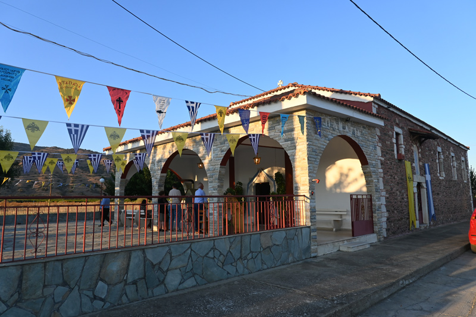
Εκκλησια της Παναγιας
Η πρώτη αναφορά λέει ότι κτίστηκε το 1886 λίγα χρόνια μετά την απελευθέρωση του Τυρνάβου και των χωριών μέχρι την Μελούνα. Στον πόλεμο όμως του 1897 έγινε στα Δελέρια μια πολύ σκληρή και αιματηρή μάχη που στοίχισε πολλά θύματα στον Ελληνικό στρατό και τον ανάγκασε σε οπισθοχώρηση μέχρι τα Φάρσαλα. Κατά την διάρκεια των μαχών οι Τούρκοι με πυροβολικό από την Μελούνα στόχευσαν την εκκλησία και μια οβίδα προκάλεσε ζημιές και φωτιά που γκρέμισε την σκεπή αλλά δεν έπεσαν οι τοίχοι.
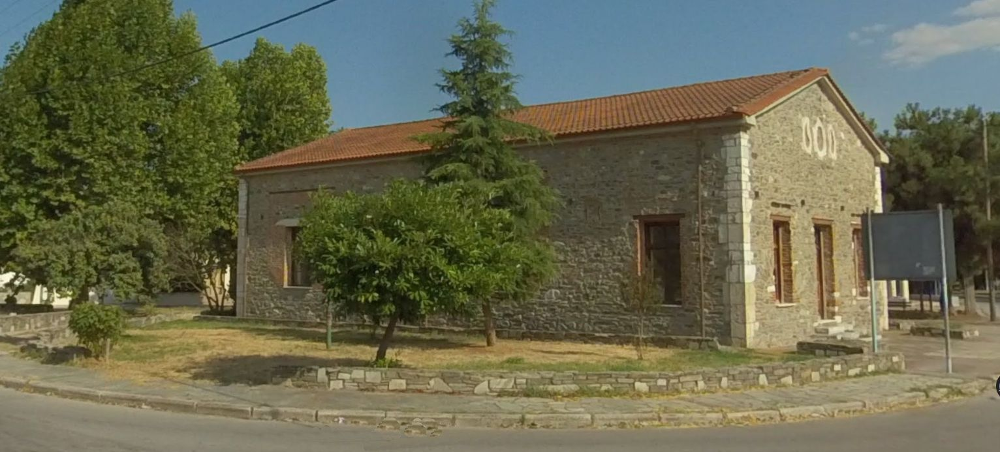
Το Παλιο Σχολειο
Ένα κτίριο γεμάτο αναμνήσεις και ιστορία. Το παλιό σχολείο του χωριού μας αποτελεί μνημείο της εκπαίδευσης και της πνευματικής κληρονομιάς των Δελερίων, θυμίζοντας σε όλους μας τα χρόνια τα παλιά.
Πολιτισμος & Παραδοση
Πολιτιστικός & Περιβαλλοντικός Σύλλογος Δελερίων
Ο Σύλλογος αποτελεί τον θεματοφύλακα της παράδοσής μας. Με πλούσια δράση που περιλαμβάνει πολιτιστικές εκδηλώσεις, εθελοντικές δράσεις για το περιβάλλον και αναβίωση τοπικών εθίμων, ενώνει όλους τους Δελεριώτες κάτω από έναν κοινό στόχο: την ανάδειξη του τόπου μας.
Δρασεις Συλλογου
- • Αναβίωση τοπικών εθίμων
- • Εθελοντικός καθαρισμός & δενδροφύτευση
- • Διοργάνωση χοροεσπερίδων & γιορτών
- • Διατήρηση πολιτιστικής κληρονομιάς
Δρασεις Συλλογου
Τοπικη Παραδοση
Διατήρηση και ανάδειξη της ιστορίας του χωριού μας. Συλλογή παλιών φωτογραφιών, καταγραφή ιστοριών από τους παλαιότερους και διατήρηση παραδοσιακών φορεσιών.
«Αντιπροσωπεύουμε έναν παραδοσιακό κόσμο που κουβαλάμε στις πλάτες μας και στην ψυχή μας.»
Τοπικα Προϊοντα
Κρασι & Τσιπουρο
Η παράδοση της αμπελουργίας στα Δελέρια είναι βαθιά ριζωμένη, παράγοντας εκλεκτά κρασιά και το φημισμένο τσίπουρο της περιοχής.
Φρουτα
Τα ροδάκινα και τα νεκταρίνια μας ξεχωρίζουν για το άρωμα και τη γεύση τους, χάρη στο μοναδικό μικροκλίμα του κάμπου μας.
Αχλαδια
Η καλλιέργεια αχλαδιού αποτελεί βασικό πυλώνα της τοπικής οικονομίας, με προϊόντα που ταξιδεύουν σε όλη την Ελλάδα και το εξωτερικό.
Σιτηρα
Τα χρυσά χωράφια των Δελερίων παράγουν σιτηρά υψηλής ποιότητας, συνεχίζοντας την παράδοση αιώνων στην καλλιέργεια της γης.
Φωτογραφικο Υλικο


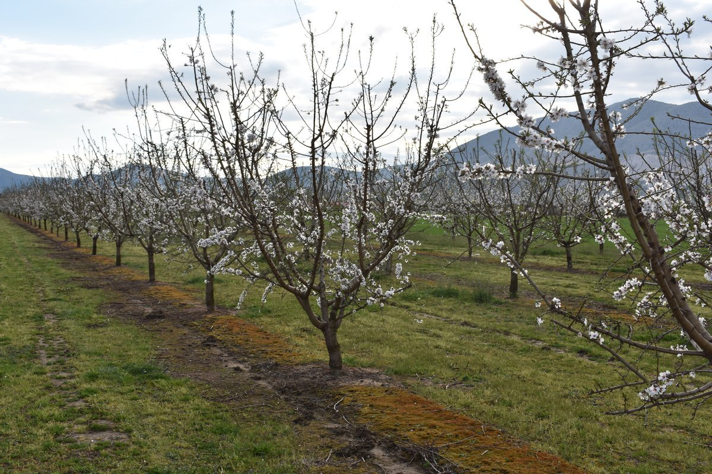
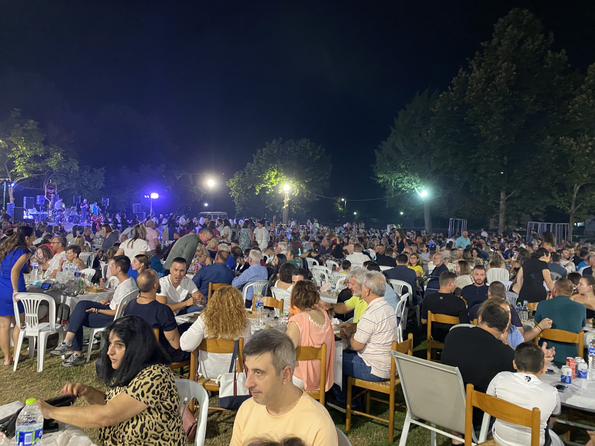
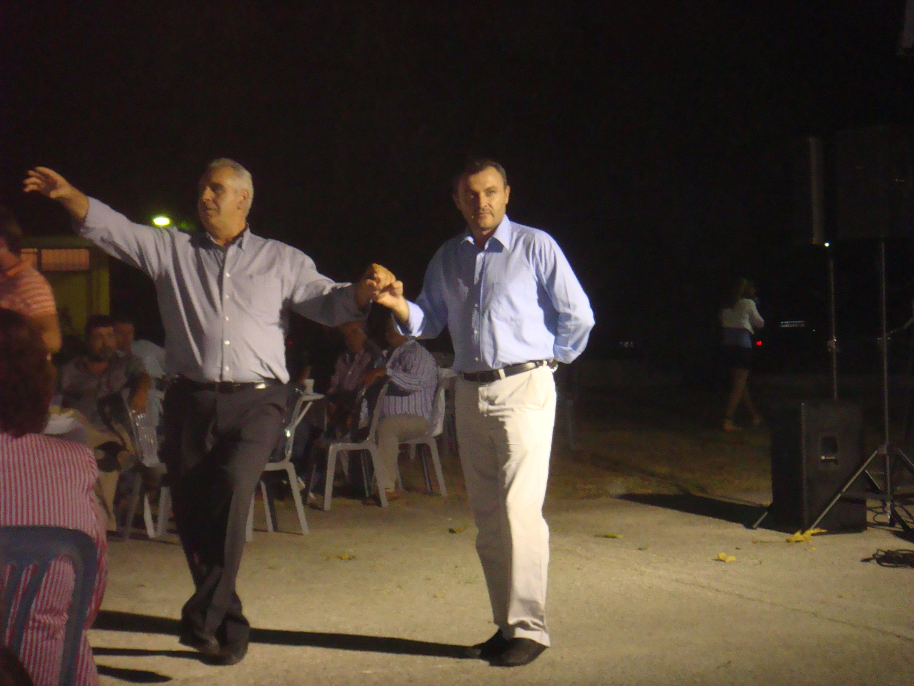
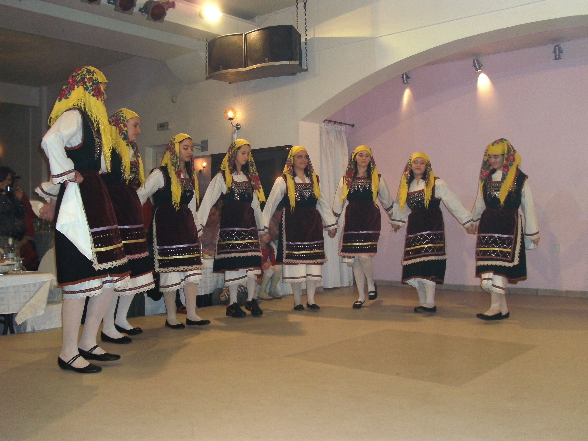
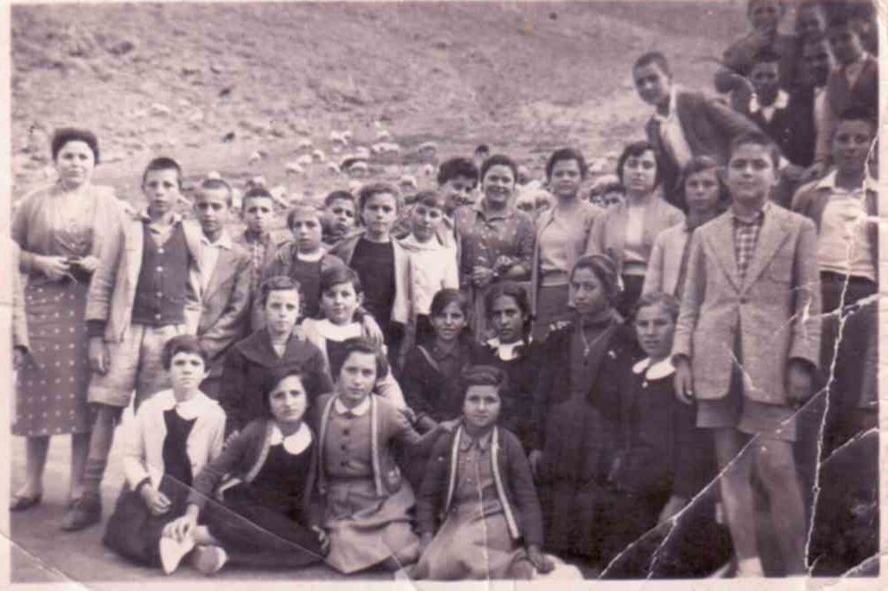
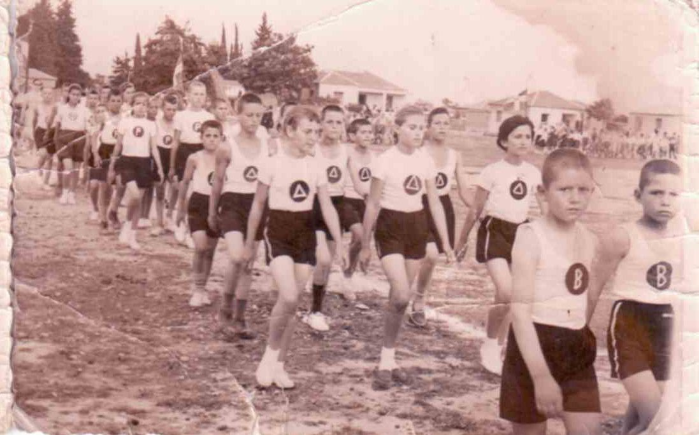
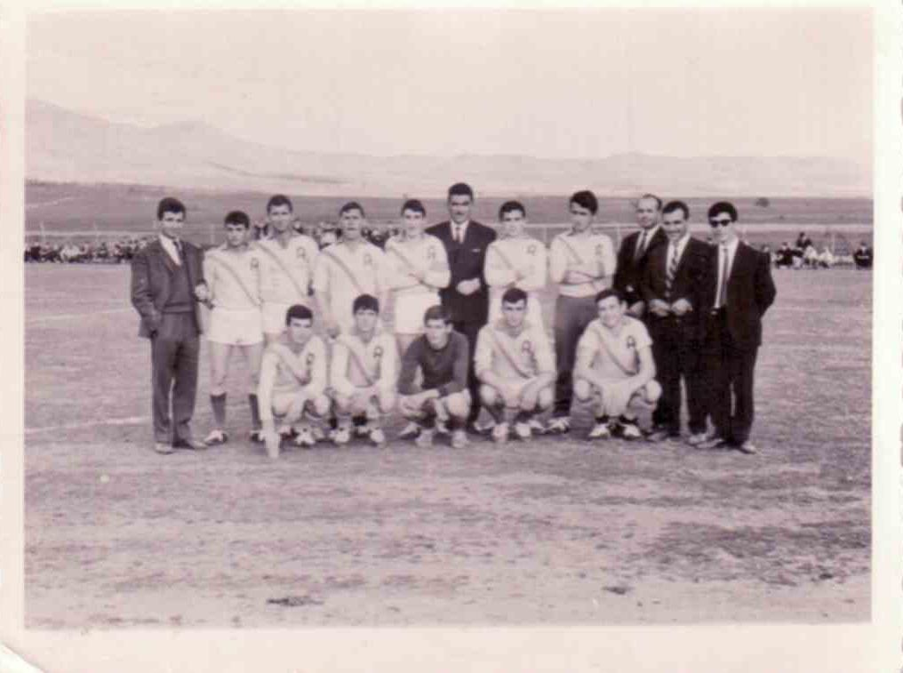
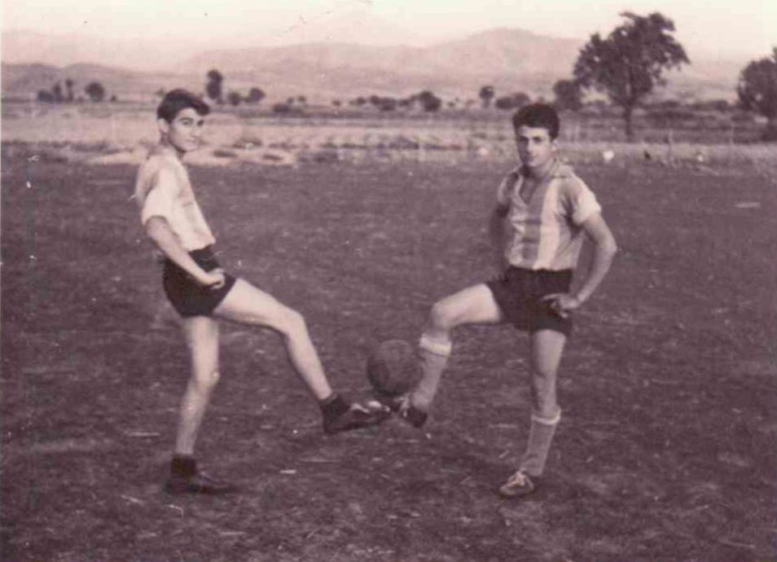
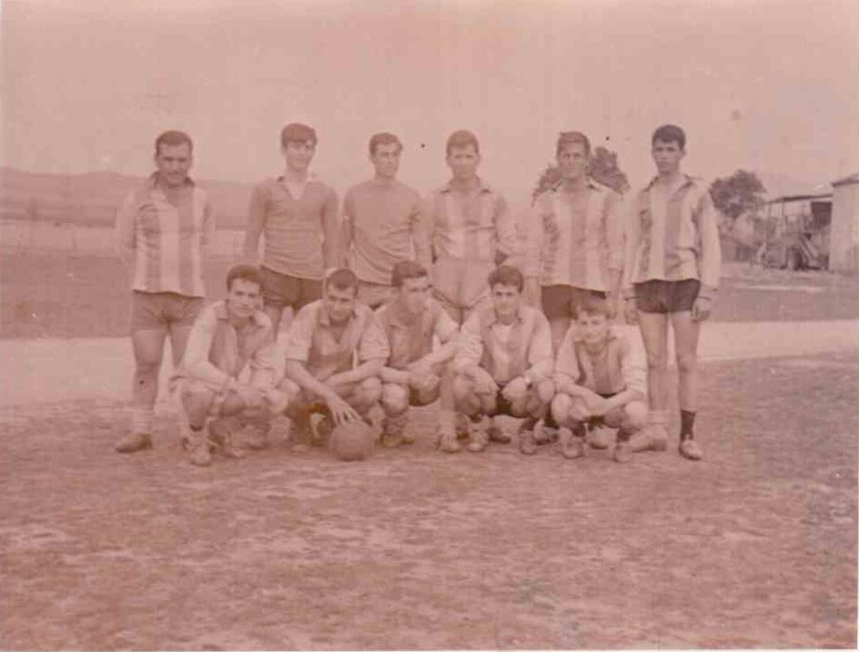
* Το υλικό ανανεώνεται συνεχώς με νέες λήψεις από το χωριό μας.
Βιντεο απο τα Δελερια
Χορευτικό
Χοροεσπερίδα Αστραπής.
Ποδόσφαιρο
Αστραπή - Ίκαρος γκολ Νίκου Μπακόλα.